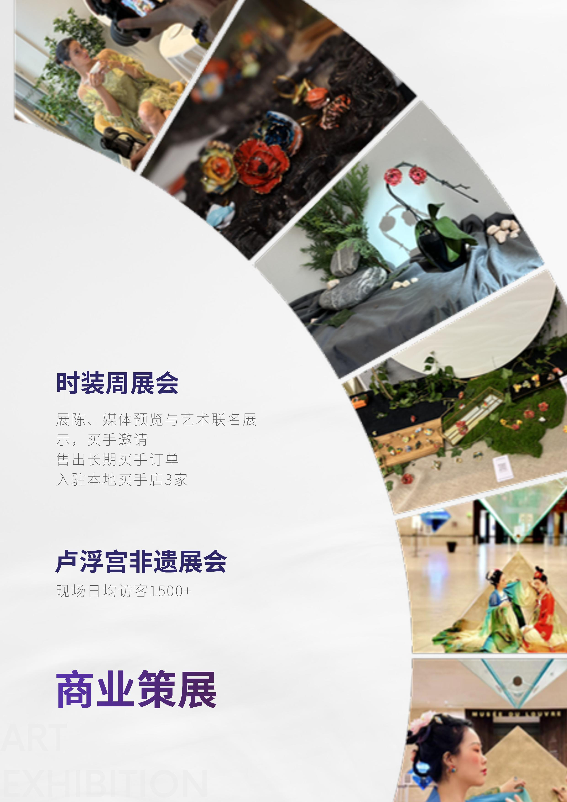

○ MIE Art & Culture · Heritage Exhibition · 非遗展览
卢浮宫
非物质文化遗产展
非物质文化遗产展
Louvre — Intangible Heritage
当中国非物质文化遗产进入卢浮宫——这不是一次文化输出，而是一次文明之间真正的凝视：我看见你，你看见我。
The Louvre carries a particular kind of weight — accumulated across centuries of acquisition, interpretation, and display. To bring something into this space is to enter into a conversation with that weight.
The exhibition presented Chinese intangible cultural heritage — living traditions, practiced crafts, embodied knowledge — within one of the world's most codified institutions of Western artistic culture. The challenge was not to reduce either tradition to an illustration of the other.
The curatorial approach began from a question of equivalence rather than comparison: what is the Louvre's relationship to the objects it holds, and what is a Chinese artisan's relationship to the knowledge they carry? These are not the same relationship. Bringing them into the same room is itself a form of inquiry.
策展方法从等价而非比较的问题开始：卢浮宫与它所持有的物件的关系是什么，中国工匠与他们所承载的知识的关系是什么？这些不是同一种关系。将它们带入同一个房间本身就是一种探究形式。
The exhibition was designed to make this aliveness legible — to present heritage not as artifact but as practice, not as historical object but as ongoing conversation between generations. The practitioners themselves were present, not as demonstrators but as subjects.
The curatorial team worked closely with each heritage practitioner to understand not just what they made, but how they understood their relationship to the tradition they inhabited. These conversations shaped the exhibition text, the spatial arrangement, and the decisions about what to show and what to withhold.
Several elements of the exhibition were deliberately incomplete — gesturing toward the fullness of a tradition that cannot be contained within any single display. The Louvre's institutional framework provided a counterpoint: completeness, possession, documentation.
展览被设计成使这种活力清晰可见——将非遗呈现为实践而非文物，不是历史物件，而是代际之间正在进行的对话。从业者自己在场，不是作为示范者，而是作为主体。策展团队与每位非遗从业者密切合作，了解他们不仅制作什么，而且如何理解他们与所居住传统之间的关系。
How to hold living knowledge inside an institution built to hold finished objects.
The spatial design worked against the museum's natural tendency toward stillness. Movement, sound, and the presence of process were incorporated into zones that the practitioners themselves occupied — not as exhibit but as themselves.
The exhibition flow created an experience of gradual immersion — beginning in the institution's own language (descriptive text, historical framing, artifacts) and moving toward an increasing encounter with the living practice. The last room had no text at all.
Visitors who moved through the full exhibition reported a distinctive quality of attention by the end — a slower, more patient kind of looking, as if the space had taught them something about how to see.
空间设计与博物馆对静止的自然倾向相对抗。运动、声音和过程的存在被整合到从业者自己占据的区域中——不是作为展品，而是作为他们自己。展览流程创造了一种逐渐沉浸的体验——从机构自己的语言开始（描述性文字、历史框架、文物），向与活态实践越来越多的相遇移动。最后一个房间完全没有文字。
A conversation between two civilizations' ways of holding knowledge — conducted in the world's most attended museum.
The exhibition drew institutional attention from both French cultural bodies and Chinese cultural organizations — creating a documented moment of genuine bilateral engagement that went beyond diplomatic gesture into actual curatorial practice.
The response from the general Louvre visitor demographic — largely international tourists with no prior exposure to Chinese intangible heritage — was notably different from what the team expected. Visitors spent longer in the exhibition than attendance records at comparable size suggested they would.
Several of the practitioners present reported that the experience of being visible to a Western institutional audience shifted something in their own relationship to their practice — a recognition that operates in the body differently from a certificate.
展览引起了法国文化机构和中国文化组织的机构关注——创造了一个超越外交姿态进入实际策展实践的真正双边交流的有记录时刻。在场的几位从业者报告说，被西方机构观众看见的经历改变了他们自己与实践关系中的某些东西——一种以不同于证书的方式在身体中运作的认可。

Intangible Heritage Exhibition · Louvre, Paris · 2024